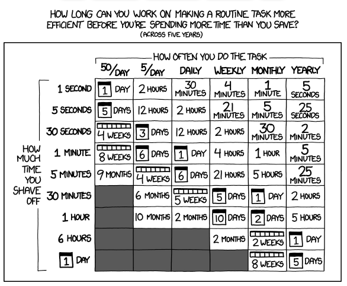

How do I use this AI thing?
Cynthia Ng
@Arty-chan
Nov 26, 2026
About me
- Formerly, Technology and Technical Services Librarian
- Now in the tech industry
- Learning about AI for 20 years
What to talk about
 https://mastodon.social/@artychan/117451599571340948
https://mastodon.social/@artychan/117451599571340948
What do we mean by AI?
AI
software that does things we’d expect to need human intelligence
Generative AI (GenAI)
trained on huge numbers of examples to create new content
Types of GenAI
- Text: LLM (large language model)
- Images: text-to-image
- Audio: text-to-speech, voice cloning, music, sound effects
- Video: text-to-video, image-to-video
- Multimodal
Agents
AI tools that also do things for you, such as:
- Fill out forms
- Create schedules and reminders
- Work through a set of tasks
What the research says: Pros and cons
Accuracy and fabricated sources
- Con
- AI invented sources and facts 1,2
- People went along with wrong AI answers 3,4
Misinformation and persuasion
- Pro
- Somewhat able to correct misinformation 5,6
- Accurate AI-written information was easier to understand 7
- Con
- Compelling disinformation, often indistinguishable from real posts 7,8
Health of the knowledge ecosystem
- Pro
- AI-generated ideas provided greater creativity 9
- Con
- AI-assisted stories more similar9 with less distinct ideas 10 losing less common ideas 11
- Lead to overconfidence in understanding 12
Learning and critical thinking
- Pro
- AI tutor decreased learning time 13
- Safeguards prevented "harmful" learning 14
- Con
- Unrestricted AI use caused lower scores once removed 14
- Offloading to digital tools weakened later memory 15
- More confidence and use of AI associated with weaker and less critical thinking 16,17
Productivity: real but uneven
- Pro
- Faster, better at various tasks 18,4,19
- Con
- Smaller gains with lower quality for experienced workers 19, and for more complex tasks 4
Bias and equity
- Pro
- Helps less-experienced workers most 18,19
- Bias can be found and fixed 22
- Con
- The people who could gain the most use it less 20
- AI tools are often biased 21,22
Environmental cost
- Pro
- Can help with smarter energy use and adapt to climate change 23
- Con
- Uses orders of magnitude more energy than task-specific systems 24,25
Using AI in your own work
Where it works well
- Learning and brainstorming
- Researching and summarizing
- Drafting and reviewing
- Troubleshooting
- Explaining things you don't understand
- Scripts and automations
- Diagramming
- Data reformatting and cleanup
Example: fixing a messy spreadsheet
Prompt: “Split names into Last and First, standardize dates and ISBNs”
Before
| Name | Date added | ISBN |
|---|---|---|
| Smith, Jane | 03/14/2022 | 978-0-14-312854-0 |
| Jane Smith | March 14, 2022 | 9780143128540 |
| lee, bob | 2022-3-15 | 978 1 86197 876 9 |
| Pat O’Neil | Mar 16 ’22 | 978-0-306-40615-7 |
After
| Last | First | Date | ISBN-13 |
|---|---|---|---|
| Smith | Jane | 2022-03-14 | 9780143128540 |
| Smith | Jane | 2022-03-14 | 9780143128540 |
| Lee | Bob | 2022-03-15 | 9781861978769 |
| O’Neil | Pat | 2022-03-16 | 9780306406157 |
Where to be careful or avoid it
- Skipping the learning
- Code you don't understand
- Version-specific details
- Exact numbers
- Summarizing key documents
- Final decisions
- Confidential data
Is it worth the time?

https://xkcd.com/1205Helping library users
Where it works well
- Starting a search
- Plain-language explanations
- Practical tech help
- Writing support
- Teaching AI literacy
- Library built or trained AI tool
Where to be careful or avoid it
- Source of facts
- Citations and book titles
- Medical, legal and financial decisions
- Replacing human help
- Bias and uneven coverage
Sick of AI?
Turn off AI features
Takeaways
- Match the right tool for the task
- Keep a human in the loop
 https://www.flickr.com/photos/freestocks/42921038494
https://www.flickr.com/photos/freestocks/42921038494
Thanks!
- Cynthia "Arty" Ng
- artychan@mastodon.social
- arty-chan@bsky.social
- about.cynthiang.ca
References
- Walters WH, Wilder EI. Fabrication and errors in the bibliographic citations generated by ChatGPT. Scientific Reports. 2023;13:14045. doi:10.1038/s41598-023-41032-5
- Dahl M, Magesh V, Suzgun M, Ho DE. Large legal fictions: profiling legal hallucinations in large language models. Journal of Legal Analysis. 2024;16(1):64–93. doi:10.1093/jla/laae003
- Dratsch T, Chen X, Rezazade Mehrizi M, Kloeckner R, Mähringer-Kunz A, Püsken M, et al. Automation bias in mammography: the impact of artificial intelligence BI-RADS suggestions on reader performance. Radiology. 2023;307(4):e222176. doi:10.1148/radiol.222176
- Dell'Acqua F, McFowland E III, Mollick E, Lifshitz H, Kellogg KC, Rajendran S, et al. Navigating the jagged technological frontier: field experimental evidence of the effects of artificial intelligence on knowledge worker productivity and quality. Organization Science. 2026;37(2):403–423. doi:10.1287/orsc.2025.21838
- Costello TH, Pennycook G, Rand DG. Durably reducing conspiracy beliefs through dialogues with AI. Science. 2024;385(6714):eadq1814. doi:10.1126/science.adq1814
- Erratum for the Research Article "Durably reducing conspiracy beliefs through dialogues with AI". Science. 2026;394(6822):eaem1178. doi:10.1126/science.aem1178
- Spitale G, Biller-Andorno N, Germani F. AI model GPT-3 (dis)informs us better than humans. Science Advances. 2023;9(26):eadh1850. doi:10.1126/sciadv.adh1850
- Goldstein JA, Chao J, Grossman S, Stamos A, Tomz M. How persuasive is AI-generated propaganda? PNAS Nexus. 2024;3(2):pgae034. doi:10.1093/pnasnexus/pgae034
- Doshi AR, Hauser OP. Generative AI enhances individual creativity but reduces the collective diversity of novel content. Science Advances. 2024;10(28):eadn5290. doi:10.1126/sciadv.adn5290
- Anderson BR, Shah JH, Kreminski M. Homogenization effects of large language models on human creative ideation. In: Creativity and Cognition (C&C '24). ACM; 2024. doi:10.1145/3635636.3656204
- Shumailov I, Shumaylov Z, Zhao Y, Papernot N, Anderson R, Gal Y. AI models collapse when trained on recursively generated data. Nature. 2024;631(8022):755–759. doi:10.1038/s41586-024-07566-y
- Messeri L, Crockett MJ. Artificial intelligence and illusions of understanding in scientific research. Nature. 2024;627(8002):49–58. doi:10.1038/s41586-024-07146-0
- Kestin G, Miller K, Klales A, Milbourne T, Ponti G. AI tutoring outperforms in-class active learning: an RCT introducing a novel research-based design in an authentic educational setting. Scientific Reports. 2025;15:17458. doi:10.1038/s41598-025-97652-6
- Bastani H, Bastani O, Sungu A, Ge H, Kabakcı Ö, Mariman R. Generative AI without guardrails can harm learning: evidence from high school mathematics. Proceedings of the National Academy of Sciences. 2025;122(26):e2422633122. doi:10.1073/pnas.2422633122
- Grinschgl S, Papenmeier F, Meyerhoff HS. Consequences of cognitive offloading: boosting performance but diminishing memory. Quarterly Journal of Experimental Psychology. 2021;74(9):1477–1496. doi:10.1177/17470218211008060
- Lee HP, Sarkar A, Tankelevitch L, Drosos I, Rintel S, Banks R, et al. The impact of generative AI on critical thinking: self-reported reductions in cognitive effort and confidence effects from a survey of knowledge workers. In: Proceedings of the 2025 CHI Conference on Human Factors in Computing Systems. ACM; 2025. Article 1121. doi:10.1145/3706598.3713778
- Gerlich M. AI tools in society: impacts on cognitive offloading and the future of critical thinking. Societies. 2025;15(1):6. doi:10.3390/soc15010006. Correction in: Societies. 2025;15(9):252.
- Noy S, Zhang W. Experimental evidence on the productivity effects of generative artificial intelligence. Science. 2023;381(6654):187–192. doi:10.1126/science.adh2586
- Brynjolfsson E, Li D, Raymond L. Generative AI at work. Quarterly Journal of Economics. 2025;140(2):889–942. doi:10.1093/qje/qjae044
- Humlum A, Vestergaard E. The unequal adoption of ChatGPT exacerbates existing inequalities among workers. Proceedings of the National Academy of Sciences. 2025;122(1):e2414972121. doi:10.1073/pnas.2414972121
- Hofmann V, Kalluri PR, Jurafsky D, King S. AI generates covertly racist decisions about people based on their dialect. Nature. 2024;633(8028):147–154. doi:10.1038/s41586-024-07856-5
- Obermeyer Z, Powers B, Vogeli C, Mullainathan S. Dissecting racial bias in an algorithm used to manage the health of populations. Science. 2019;366(6464):447–453. doi:10.1126/science.aax2342
- Rolnick D, Donti PL, Kaack LH, Kochanski K, Lacoste A, Sankaran K, et al. Tackling climate change with machine learning. ACM Computing Surveys. 2022;55(2):42. doi:10.1145/3485128
- Luccioni AS, Jernite Y, Strubell E. Power hungry processing: watts driving the cost of AI deployment? In: Proceedings of the 2024 ACM Conference on Fairness, Accountability, and Transparency. ACM; 2024. p. 85–99. doi:10.1145/3630106.3658542
- Li P, Yang J, Islam MA, Ren S. Making AI less "thirsty". Communications of the ACM. 2025;68(7):54–61. doi:10.1145/3724499